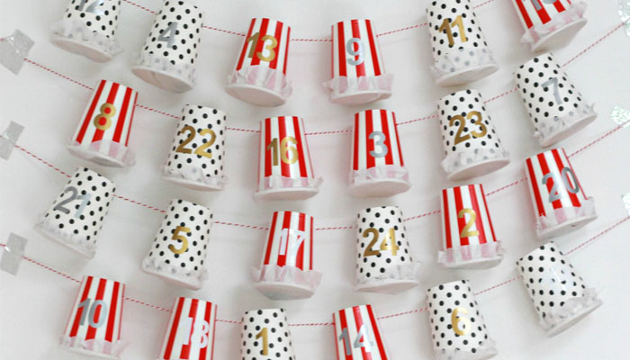

Az adventi naptár lényege tehát, hogy december 1-től 24-ig 24 napon keresztül minden nap tartogat valami meglepetést annak, akinek szántuk. Először is nézzünk szét a környezetünkben, mi az, ami van otthon, amiből meg tudjuk valósítani a 24 darab meglepetés elrejtését. Néhány ötlet, hogy mibe rejthetjük az apróságokat:
Azt is át kell gondolni, mielőtt belefogunk az adventi naptárt házilag elkészíteni, hogy milyen meglepetéseket szeretnétek beletenni. Például édesség, házi sütemény, aszalt gyümölcs, magvak, apró játékok, üzenetek? Ez azért fontos, mert az elkészítendő típust ehhez érdemes megválasztani. Ha például apróbb játékot is elrejtenénk, a gyufásdoboz vagy az üres kávékapszulás lehet, hogy pici lesz. Mi most két ötletet fogunk nektek megmutatni, az egyik gyerekeknek szól, a másik pedig felnőtteknek, ha szeretnétek a párotokat is meglepni egy jópofa adventi kalendáriummal.
Adventi naptár pohárból
Hogyan rendezzük a készletet